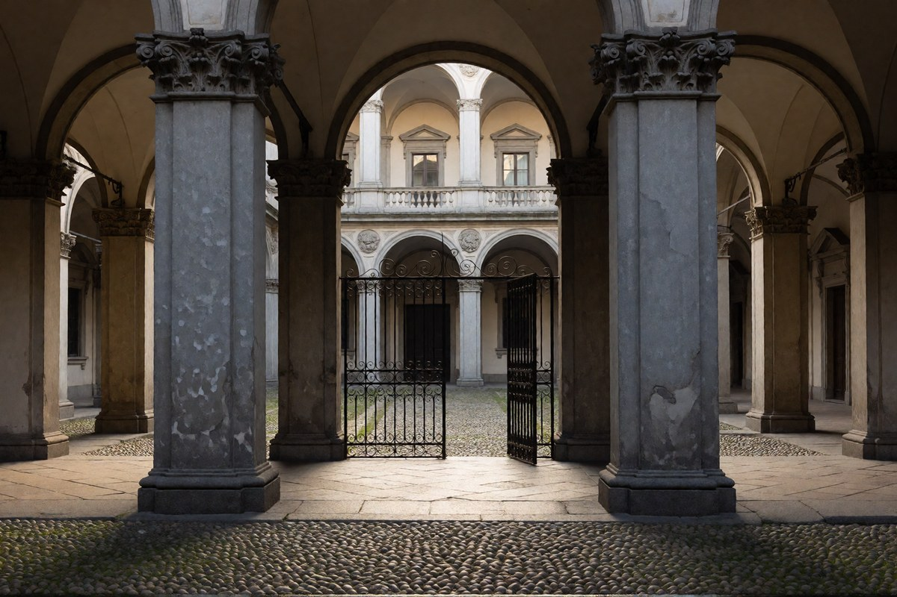

Cronaca · 23 novembre 2026
Sequestro da 19 milioni per il palazzo di Brera venduto ad Armani

La Guardia di Finanza ha sequestrato tre immobili in Versilia alla compagna di Felice Riva, l'ex presidente del Milan. Per la Procura di Milano i dividendi della cessione del palazzo di via Borgonuovo andavano dichiarati in Italia.
di Franco Zanghì
La Guardia di Finanza di Milano, su delega della Procura, ha sequestrato quasi 19 milioni di euro a Vigdis Christiansen, la compagna di una vita di Felice Riva, detto Felicino, l'industriale ed ex presidente del Milan morto nel 2017. Il sequestro, per equivalente, riguarda tre immobili di pregio in Versilia.
Al centro della vicenda c'è un palazzo del Seicento in via Borgonuovo 21, nel quartiere di Brera, a Milano: circa 2.000 metri quadrati su tre piani. Dal 1982 ci abitava in affitto lo stilista Giorgio Armani. Alla fine di giugno del 2022 l'edificio è stato venduto, per oltre 72 milioni di euro, alla società immobiliare che all'epoca faceva capo proprio ad Armani.
Dove sono finiti i soldi
Il palazzo non faceva parte dell'asse ereditario della famiglia Riva, una delle dinastie del cotone italiano del Novecento: era di una società immobiliare controllata a sua volta da una holding lussemburghese. Il ricavato della vendita, scrive l'ANSA, è stato distribuito come dividendi dalla società lussemburghese all'unica socia, la signora Christiansen, accreditato direttamente sul suo conto.
Quei soldi, secondo l'accusa, in Italia non sono stati dichiarati. La signora, norvegese, dichiarava la residenza all'estero: in Norvegia, precisa l'ANSA. Per le pubbliche ministere Giancarla Serafini e Giovanna Cavalleri, invece, il centro dei suoi interessi era in Italia, e quindi valevano gli obblighi dichiarativi italiani. È l'ipotesi che gli addetti chiamano esterovestizione. Il reato contestato è l'omessa dichiarazione dei redditi, e le imposte non versate sarebbero 18,8 milioni di euro: la stessa cifra del sequestro.
Come ci sono arrivati gli investigatori
Con i dettagli della vita di tutti i giorni. Secondo la ricostruzione del Corriere della Sera: la spesa nel supermercato di Camaiore, il veterinario dei cani, l'ombrellone in prima fila a Forte dei Marmi da vent'anni, l'officina di Lucca per le automobili. E poi il telefono: 203 giorni in Italia nel 2022, 227 nel 2023. Per la legge, oltre i 183 giorni l'anno si è residenti in Italia ai fini fiscali.
In un primo momento il giudice per le indagini preliminari aveva respinto la richiesta di sequestro, anche per i dubbi su quel conteggio dei giorni, contestato da una consulenza della difesa. Poi il Tribunale del Riesame ha accolto il ricorso della Procura, guardando all'insieme degli altri indizi.
Il Fatto Quotidiano aggiunge un dettaglio. Nel luglio dell'anno scorso, dopo l'inizio della verifica fiscale, la società proprietaria della villa in Versilia ha spostato la sede in Italia e ha affittato l'immobile alla stessa signora per 600 mila euro l'anno. Per i magistrati, un modo di mettersi in regola dopo.
Chi era Felicino Riva
Erede del Cotonificio Vallesusa, Felice Riva prese il Milan da Andrea Rizzoli nel 1963 e ne fu presidente fino al 1965. Poi vennero il crac e la condanna per bancarotta fraudolenta, e la fuga fino a Beirut: è lì che conobbe l'assistente di volo norvegese che gli restò accanto fino all'ultimo e che è la madre della sua ultimogenita. Morì nel 2017, a 82 anni.
Il punto
Chi vive in Italia, in Italia paga le tasse: vale per il pensionato di Camaiore e vale per chi vende un palazzo a Brera. Non è invidia verso chi ha avuto successo: è rispetto per chi paga tutto, fino all'ultimo euro.
Detto questo, la signora Christiansen è indagata, non condannata, e la sua difesa avrà modo di dire la sua. E allora la domanda è una: quanti vivono qui tutto l'anno, con la residenza all'estero soltanto sulla carta?
Fonti
- ANSA, «Sequestrati quasi 19 milioni alla compagna di Felicino Riva per la compravendita di palazzo Armani», 23 novembre 2026
- Il Giorno, «Sequestrati 19 milioni di euro alla compagna di Felicino Riva», di Anna Giorgi, 23 novembre 2026
- Il Giornale, «Sequestrata una villa in Versilia alla vedova di “Felicino” Riva», di Manuela Messina, 23 novembre 2026
- Corriere della Sera e Il Fatto Quotidiano, le ricostruzioni del 23 novembre 2026 sui giorni di permanenza in Italia e sul contratto d'affitto della villa
Vigdis Christiansen è indagata, non condannata: l'omessa dichiarazione è un'ipotesi dell'accusa e va provata. Nelle fonti consultate non risultano dichiarazioni della difesa. Le testate non coincidono su alcuni particolari: l'ANSA, Il Giorno e il testo del Giornale scrivono tre immobili di pregio in Versilia, mentre il titolo del Giornale parla di una sola villa; l'ANSA e Il Giorno la definiscono compagna di vita, il titolo del Giornale vedova; la residenza all'estero è indicata in Norvegia soltanto dall'ANSA. Felice Riva fu presidente del Milan e non dell'Inter, come scrive per errore una testata nazionale. Il dettaglio dei giorni di permanenza in Italia e quello dell'affitto della villa sono della ricostruzione del Corriere della Sera e del Fatto Quotidiano e non compaiono nel resoconto di agenzia.